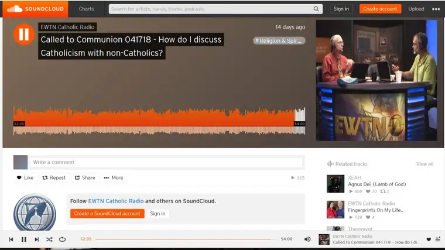

I’m an avid listener of Catholic radio. For our area, that means, more specifically, Real Presence Radio, which has two weekly local shows (for which I’m one of the hosts) and many shows in between filled in by the Eternal World Television Network.
For the past 10 years or so, these shows have been lighting up my soul with information, wisdom, and hope. I love hosting, and I love listening to the many other offerings. I’ve even, in the past year, begun to rely on the phone app, which allows me to hear my favorite shows whenever it’s most convenient.
Recently, I had clicked onto my app, and found that my favorite show, “Called to Communion” with Dr. Anders, was airing that moment, so I didn’t have to find the podcast version. As I circled our neighborhood on my nightly walk, I became absorbed in the conversations. Two calls in particular really moved me. I couldn’t wait to get back to find the podcast the next day to review and possibly take notes. I wanted to remember what Dr. Anders had offered the callers, and possibly share his gentle wisdom with others.
But when I found the podcast for that day, it was a different show. My heart sank. I emailed our local producer, who put me in touch with the folks at EWTN. It took a few tries, because apparently the show I heard was not the one that was supposed to be aired that evening — it was a mistake (or perhaps what one might call a “God-incident”). After I described a bit about the calls, they finally located it (here). I share this background because it impressed me how willing they were to go on this search with me, just so I could review the material that I’d found so meaningful.

I’d invite you to take a listen to the show that’s labeled, “How do I discuss Catholicism with non-Catholics?” that aired first on April 18. But in the event you don’t have an hour to spare, I’ll summarize the two calls that had me so ignited (starting at 41:33).The first came from Columbus, Ohio, from a man who’d begun his faith life as a Catholic, but left the Church, and in the process, led his whole family away shortly after the baptism of his now-grown daughter. In his later years though, now seeing the treasure he left, he has returned to his Catholic faith, and is grieved over the fact that his family is not with him in this journey. He sees his loss as everyone’s loss, and looks at it with regret. He asked what he could do, if anything, to help draw his daughter to the Catholic faith.
Dr. Anders proposed “a third alternative,” between “doing nothing and trying really hard to persuade her.” He suggested that the caller lengthen his “time horizon indefinitely,” proposing that he be “intellectually open” to the possibility that his daughter might become Catholic, but also, that her “being drawn to the faith could very well happen in a way that doesn’t make sense” to him. “I would take some of the onus off yourself and throw it back on God and the action of the Holy Spirit, where it belongs,” Dr. Anders suggested. “I would relieve yourself of all anxiety in the matter, and entrust yourself to God and his providence.”
Furthermore, he suggested to this man that he make his principle focus on “generously living the Catholic faith” in his own life, not just apologetically to persuade people, but to seek “actual wisdom and prudence, growing in the virtues,” so that he can share the fruits of Catholic life with his daughter, in even very subtle ways. Maybe she will come to him with a problem, Dr. Anders proposed, and in offering his wisdom, the fruit of his generous Catholic living which come through the sacraments and faith, may end up being what helps her. “You’re building a bridge of love,” he said, noting that his efforts of loving in this way will not end when his life does, assuming he predeceases his daughter in death. “You’ll keep this up in the next life.”
Dr. Anders concluded with, “God loves her more than you do. He desires to be united with her in charity more than you do. He’s in control…we’ll leave up to God how those things are going to be dispensed for the sake of the salvation of the soul of your daughter.”
So beautiful, I thought. Worth repeating.
Then came the call from another father, from Boulder, Colo., who shared that he and his wife had raised their two boys in the Catholic faith, but have watched with sadness as neither practices his faith in a vital way. The man seemed forlorn, defeated. My heart went out to him. And then he asked a question that he admitted probably was “dumb,” but was an honest thought he’d had: If they hadn’t raised their boys Catholic, maybe they wouldn’t have had anything to walk away from. Would that have been better?
I understand this man’s heart. I’ve been in this same place. And so I was listening carefully to Dr. Anders’ response.
Gently, he assured him he had not made the wrong decision, that his moral obligation is to raise his kids in the faith and in the moral life to the best of his ability, not to ensure they use their freedom wisely, since the latter is out of his and his wife’s control. “You only have control over the catechism you were able to give them, not their willingness or ability to assimilate that or choose to follow it,” he said.
But what he said next really resonated. “Keep in mind, you’re in confrontation with a very, very anti-religious and hostile culture. It’s more difficult to transmit the faith through successive generations today than it probably ever has been in the history of the world, so it’s a great battle that lies in front of us, and we’re going to be judged by the fidelity of our vocation, not the fruits of that fidelity.” [my emphasis]
Wow. Wow! Yes, this is true, and I think on some level we know it, but at times, it can become lost. The earlier parenting years, we are so attached to the outcome of our kids’ daily lives. It is a process to learn to let go of this very real responsibility, and let God take over where he’s meant to.
“In terms of the hope for your children, of course there’s hope,” Dr. Anders continued. “Where there’s life, there’s hope, and God is the judge of souls, not us.” He told the father that, of course, he had no way of seeing into the future. “You can’t possibly see the end from the beginning.”
Then he suggested something rather profound — something I have wondered about, and hoped for, in faith, myself.
“It could be…that the trial you are facing now in your own spiritual life — the realization that it doesn’t all depend on you….that we’re beggars and we hang from cradle to grave on the mercy of God…how we come to bear these things up in our old age and the degree of surrender to divine providence that we experience — may be in fact the means that God chooses to reconcile our kids to himself.”
Wow, again.
“We believe as Catholics,” he concluded, “that the merits of our sacrifices, including our willing surrender to Divine Providence in the face of apparent evil, that those sacrifices that we make have spiritual value that God can use for the good of his Church, including for our kids and our friends’ kids.”
Yes, what a hope! And one we can only entrust to the mercy of God to accomplish if he wills it. But we have to trust that he might.
I was blown away by these exchanges. And I know for any parent who has, in pain, watched his or her child walk away from a gift like the everlasting gift of faith, will appreciate the hope herein, and the important reminders Dr. Anders illuminates.
Thank you, EWTN, for going the extra mile to track down these healing words. Thank you, Dr. Anders, for your heart that is so aligned with Christ and His Church that you would summon these words from your heart, on the spot as you did. It’s an amazing grace, and we are the beneficiaries, thanks be to God.
Q4U: When did you lose hope, and then regain it, and how?